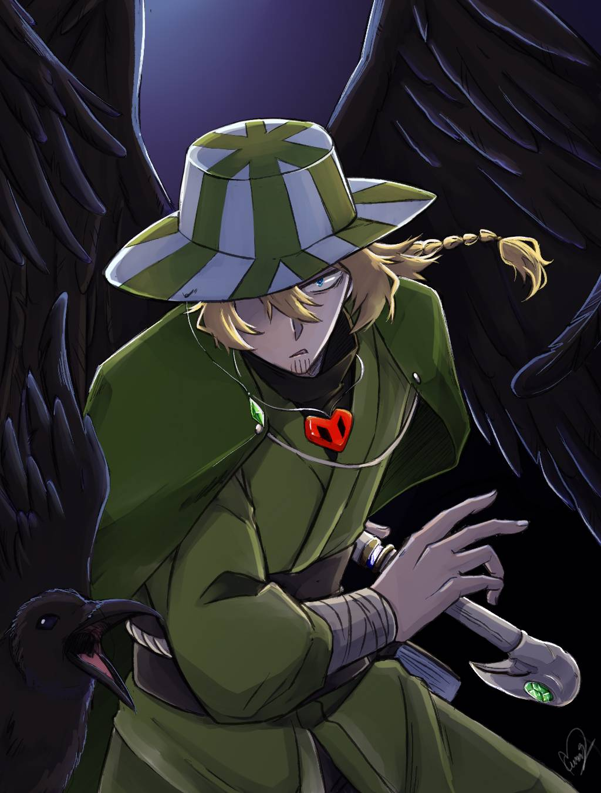

Philza a déclaré qu'il était incroyablement vieux, ayant des centaines voire des milliers d'années et à cette époque, il a rencontré de nombreuses personnes, comme son vieil ami Technoblade, et a vu des choses fantastiques, l'une d'entre elles étant peut-être une méthode pour ressusciter des gens de les morts, ainsi que de voir l'ascension et la chute des civilisations, et qu'il a éprouvé une grande douleur à la mort de sa famille et de ses amis, bien que cette douleur ne soit "pas aussi grande que la douleur qu'il a infligée à leurs ennemis". Phil a dit qu'il ne sait pas s'il est immortel, mais qu'il n'est pas encore mort. Philza a fait allusion à son passage dans SMPEarth alors qu'il était sur le serveur. Il était le co-leader de l'Empire antarctique avec Technoblade et l'a aidé à prendre en charge l'ensemble du serveur. Dans quelle mesure cela est canon est discutable, car il a déclaré que son passé avec l'Empire antarctique n'est qu'un canon frontal À un moment donné dans les années 1970, Philza s'est "déprimé" avec le Samsung Smart Fridge sans nom, donnant naissance à Wilbur, Wilbur a échangé des lettres avec Phil à propos de son temps sur le serveur. Ces lettres ont été la principale raison pour laquelle Phil s'est joint, alors qu'il s'inquiétait de la santé de son fils. Cependant, le récit de Phil des lettres ne correspond pas à l'histoire; selon les lettres, Wilbur a remporté l'élection et Schlatt n'a jamais existé. Arc de la rébellion de Manberg et adhésion au SMP Peu de temps avant que Philza ne rejoigne, il était dans son monde hardcore et dans un appel avec Wilbur, qui était sur le point d'appuyer sur le bouton. Philza a tenté de consoler Wilbur et de l'empêcher de le pousser. Lorsqu'il a échoué, Phil s'est ensuite connecté au SMP pour empêcher physiquement Wilbur d'appuyer sur le bouton. Cependant, Wilbur l'a poussé et a ensuite dit à Philza de le tuer, ce qu'il a fait à contrecœur. Peu de temps après la guerre, Philza a aidé Technoblade à assassiner George, ce qui a été qualifié en plaisantant de mort canon. Arc de châtiment Reconstruction Pendant l'ère de la reconstruction, Philza a décidé d'aider L'Menberg à se reconstruire, les rejoignant également pour aider à terminer The Guardian XP Farm. Cependant, il a déclaré qu'il restait neutre, peu disposé à choisir officiellement son camp. Malgré cela, Tubbo a accordé une petite parcelle de terrain près de la maison L'Manbergian de Tommy à l'usage de Philza. Quelques jours après la guerre, Phil est allé miner près de l'ancienne base de Technoblade pour s'approvisionner. Il a été interrompu par Fundy, qui voulait échanger du charbon contre l'ours polaire de Karl. Cela a conduit à une petite vente aux enchères où Fundy a tenté de le convaincre d'échanger un coffre vide contre des minerais et des matériaux. Après cela, Phil est retourné à l'exploitation minière, mais a ensuite été interrompu par Tommy, qui montrait un Connor nouvellement connecté. Après la brève interaction, Phil est retourné à l'exploitation minière. Il a miné pendant plus de huit heures, mais n'a pas construit de base. Quelques jours plus tard, Phil a construit sa maison à L'Manberg et a passé du temps avec Ghostbur, qui lui a demandé d'écrire un livre pour sa collection. Dans le livre, Phil a partagé qu'il ressentait de grands remords pour avoir tué son fils. Tout en aidant Tubbo à récolter de l'obsidienne, Phil a découvert que le L'Mantree avait été dépouillé de ses feuilles par un vandale inconnu. Phil, après avoir reçu des images de référence de son chat, a reconstruit le L'Mantree exactement comme il était avant de partir exploiter la netherite. Au cours de la session d'extraction de netherite, Phil a reçu un appel de Fundy, qui était bouleversé par le fait qu'Eret ne se soit pas présenté pour finaliser son adoption. Voyant à quel point Fundy était bouleversé par tout cela, Phil est retourné dans le monde extérieur pour le réconforter, lui a donné un lit dans sa maison et l'a emmené pêcher. Loyauté changeante Philza résidait à L'Menberg, mais se demandait où était sa loyauté. Il appréciait la compagnie de Tubbo et était fier de lui pour avoir reconstruit L'Manberg plus grand qu'avant. Il a commencé à remettre en question le leadership de Tubbo, car Tubbo volait ses citoyens sous prétexte de «taxes» pour ses projets personnels, et a créé une «salle de panique» dans laquelle il abandonnerait son pays en cas de danger. D'un autre côté, Techno était une figure beaucoup plus honorable aux yeux de Phil et avait une histoire beaucoup plus longue en tant qu'ami, et sa compagnie manquait à Phil. Son soutien à Techno est devenu plus ouvert alors qu'il s'habillait de la même tenue d'hiver et peignait son bouclier aux couleurs de l'Empire Antarctique. Phil a ensuite aidé Techno à transporter ses animaux de compagnie Hubert et Fool vers sa nouvelle base. Après être arrivé et les avoir déplacés dans le sous-sol, Techno a dit à Phil qu'il le considérait comme son seul ami et lui a offert les Friendship Emeralds et la boussole de Techno. La boussole pointait vers un Lodestone dans la base de Techno, loin de Dream SMP et de L'Manberg. Techno a également dit à Phil que s'il avait des ennuis, Techno viendrait à son aide. Plus tard, Phil a aidé Techno à construire une ferme de tortues et une ferme d'abeilles.
La décision de l'armée des bouchers d'exécuter Technoblade a commencé par sa recherche. Sachant que Phil était le meilleur ami de Technoblade, ils ont cherché des informations sur son emplacement auprès de Philza. Cependant, lorsqu'ils sont arrivés chez lui pour l'interroger, Phil a refusé de donner des indices sur les allées et venues de Technoblade. En conséquence, ils ont saccagé la maison de Phil, la vandalisant tout en recherchant des preuves. Tubbo a trouvé la boussole de Techno et a mis Phil en résidence surveillée pour avoir refusé de coopérer. Phil a reçu un moniteur de cheville (une paire de bottes en fer nommée "Ankle Monitor") pour s'assurer qu'il ne pouvait pas quitter la maison. Après leur départ, il a placé le moniteur de cheville sur un support d'objets et a suivi l'armée des bouchers, et a été témoin de leur saisie de Techno. Il a réussi à se faufiler avant que l'armée des bouchers ne le remarque. Au retour de l'armée des bouchers à L'Manberg avec Techno, Phil se tenait sur son balcon pour regarder l'événement. Tout au long de l'exécution et de l'évasion, Philza s'est moqué de l'échec de l'armée des bouchers et a été abattu par un Tubbo enragé. Phil a commencé à montrer ouvertement son dégoût envers le nouveau gouvernement et est devenu convaincu que le pouvoir avait tordu ces gens et qu'il fallait leur donner une leçon. Trois jours après le début de son assignation à résidence, Tubbo lui a rendu visite et lui a donné une paire de nouvelles bottes Ankle Monitor inamovibles (elles étaient enchantées par la malédiction de la liaison). Il a également failli recevoir un casque inamovible, mais Ghostbur et plus tard Tubbo l'ont accidentellement mis, ce qui a empêché Phil de le porter. Pendant l'assignation à résidence de Phil, il n'a rien pu faire en dehors des limites de son domicile. Cependant, il a eu l'idée d'agrandir sous son sous-sol car selon Fundy, il est légal d'agrandir au-dessus ou au-dessous de sa maison tant que c'est à l'intérieur de la propriété. Comme Phil savait comment briser le substrat rocheux, il prévoyait de le faire sous sa maison, créant un sous-sol vide. Au cours des derniers jours d'assignation à résidence, Phil a réussi à casser son moniteur de cheville, en utilisant un bloc de magma pour réduire leur durabilité jusqu'à ce qu'ils se cassent. Il s'est ensuite échappé dans les catacombes sous la maison et est sorti derrière sa base sous la voie ferrée. Phil a également tenté de rendre les objets de Technoblade, mais les objets de Techno n'étaient pas dans le bunker de Tubbo comme il le pensait. Phil a finalement échappé à L'Manberg avec l'aide de Techno et de ses potions, fuyant vers sa cabane dans l'Arctique.
Après leur évasion, Techno a montré à Phil son deuxième coffre-fort, où Phil a convenu que le gouvernement n'avait rien fait de bon. Dans les jours qui ont précédé la guerre, Phil a construit une ferme de verrues inférieures. En apprenant la trahison de Tommy au Green Festival, il a démoli la tour pavée de Tommy. Techno, Phil et Dream sont allés détruire la nation une fois pour toutes, où Phil et Dream ont joué un soutien à distance pendant que Techno se battait au sol. Lorsque Techno a déclenché le signal (Firework lance les couleurs du drapeau anarchiste), Phil a engendré la première vague de garrot et s'est joint au chaos. Phil et Techno ont tous deux dit à Ranboo qu'il pouvait partir et être en sécurité. Après la bataille, Phil s'est rendu compte que Friend était mort et Ghostbur lui a crié dessus pour avoir démoli la nation. Plus tard, cependant, Ghostbur oublia ce mauvais souvenir, et demanda à Phil de participer à sa résurrection. Phil a déclaré qu'il avait une connaissance limitée de la nécromancie et qu'il aurait besoin de temps pour étudier. Cependant, Ghostbur a insisté pour que le rituel ait lieu le 10 janvier, et Phil a accepté à contrecœur. Plus tard, Phil se souvint de Ranboo, l'invitant à déménager dans l'Arctique, ce qu'il accepta. Phil a alors commencé à planifier pour héberger à la fois Ranboo et les survivants de la Hound Army.